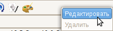
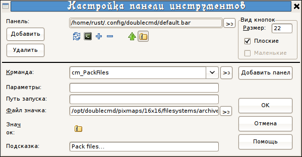
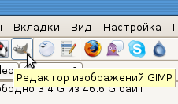
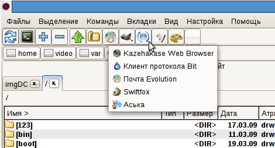

С ее помощью вы можете вызывать внутренние команды Double Commander, внешние программы и выполнять некоторые станартные операции. Если задержать курсор мыши над кнопкой — появится всплывающая подзказка.
Получить доступ к настройкам панели можно, щелкнув правой клавишей мыши по панели и выбирав в меню пункт Редактировать.

Откроется диалоговое окно "Настройка панели инструментов"

Первая строчка указывает из какого файла Double Commander будет брать настройки для панели инструментов (структура файла аналогична таковому у TC), под ней находятся значки добавленных на панель кнопок.
Добавить — добавляет новую кнопку на панель, с пустыми параметрами.
Удалить — удаляет выбранную кнопку.
Размер — поле, в котором указывают, какого размера будут значки на панели. Лучше указывать 16 или 22 или 32, так как это размеры остальных иконок в Double Commander. Но допускаются любые цифры, размер задается в пикселях.
Плоские — делает кнопочки на панели визуально в виде кнопок или только в виде значков.
Команда — строка, в которой можно выбрать любую внутреннюю команду, или указать свою, например для запуска приложения (команды для приложений можно брать из главного меню системы).
Параметры — в строке указывается параметр, который будет использован при выполнении команды (для каждой команды свои).
Функции (без параметров подставляет все выделенные файлы):
%f - только имя файла
%d - только путь, без разделителя в конце
%p - полный путь к файлу
%D - текущий каталог в активной или выбранной панели
Выбор панели (если не задано, используется активная панель):
%X[l|r|s|t] - где X функция (l - левая, r - правая, s - источник, t - получатель)
Choosing selected files (only for %f, %d, %p):
%X[
] - где X функция
is 1..n, где n количество выделенных файлов. If there are no selected files, currently active file is nr 1.
If
is invalid or there is no selected file by that number the result for the whole function will be empty string.
Adding prefix, postfix before or after the result string:
%X[{
}][{ }] If applied to multiple files, each name is prefixed/postfixed.
Above parameters can be combined together.
Порядок передачи параметров::
- %функция
- левая или правая или источник или получатель панель (необязательный)
- число файлов (необязательный)
- prefix, postfix (необязательный)
Примеры:
- %f1 - первый выделенный файл в активной панели
- %pr2 - полный путь второго выделенного файла в правой панели
- %fl - только имена файлов с левой панели
- %pr - полный пути для файлов с правой панели
- %Dl - текущий каталог в левой панели
- %f{-f } - prepend each name with "-f "
- (ex.: -f
-f ) - %f{"}{"} - заключить каждое имя в кавычки
- (ex.: "
" " ") - %f1{-first }%f2{ -second }
- if only 1 file selected : -first
- if 2 (or more) files selected: -first
-second
Путь запуска — используется для указания полного пути к файлу программы (при необходимости).
Файл значка — в этой строке указывается путь к файлу значка, который будет использован для отображения кнопки.
Значок — показывает как будет выглядеть кнопка на панели.
Подсказка — текст, введенный в эту строку, будет отображаться при задержке указателя над значком запуска на панели.

Чтобы вставить разделитель между значками, нужно создать новую кнопку, а в строке Подсказка вписать "-" (минус).
Так же существует возможность создать выпадающее меню:

Для этого в строке Команда надо выбрать cm_ShowButtonMenu, а в строке Параметры указать расположение файла, с настройками для выпадающего меню (или просто его название, если он расположен в той же папке). Структура файла выпадающего меню аналогична главному.